Ezerion Nedir?
Ezerion, oyun alanında dağılarak, rakip oyuncunun alanlarını ele geçirme hedefli bir strateji oyunudur. Oyun içerisindeki seviyelerde bulunan bomba, ışınlanma, mayın ve duvarlar; oyunculara avantaj ve dezavantaj sağlayarak oyundaki heyecanı yükseltir. Her seviyede oyun alanı, rakip sayısı ve zorluk seviyesi değişerek oyuncuya vazgeçilmez bir strateji ve oyun deneyimi sunar.
Oyunda birinci seviye ile başlanarak her seviyede zafer kazanıldıktan sonra bir üst seviyeye geçilir. Her seviye kazanıldığında oyuncunun puanına göre başarı yıldızı kazanılır. Bu yıldızların sayısı ileride diğer evrenlere sıçramak için kritik bir kaynak olacaktır.
Oyun şimdilik iki dil (İngilizce ve Türkçe) desteği ile gelmektedir. İleride çıkaracağımız güncellemelerde bunu olabildiğince arttırmaya çalışacağız.
Nasıl Oynanır?
Oyunda farklı evrenler ve seviyeler vardır. Yeni başlayan bir oyuncu, su evreninden birinci seviye ile başlar. Her seviyeye girildiğinde seviye için hazırlanmış oyun alanında başlar. Her seviye için oyun alanları ve bu alanda oynayacak oyuncu sayısı bellidir. Her oyuncu kendi renginde olan karelere tıklayarak oynar.
Bir karenin üzerindeki zar değerleri; karenin kaç tıklama aldığını gösterir. Bu değerler, karenin komşuluğundaki kareler kadar (Alt, üst, sağ ve sol kareler) yükselebilir. Karenin değeri alabileceği en üst değeri aldıktan sonra bir defa daha tıklandığında patlayarak etrafındaki karelerin her birine 1 değerini ve oyuncunun rengini ekleyerek dağılır. Böylece alanda çoğalarak ilerler. Oyun alanında rakiplerin renginde kare kalmadığı zaman oyun kazanılmış olur. Kendi renginizde kare kalmadığında ise kaybetmiş olursunuz.
Oyundaki Nesneler
Bombalar
İki adet bomba türü vardır. Oyun içerisinde değişik yerlerde bu çeşitli bombalar mevcuttur. Bombalar, o karenin üzerine dağıldığınızda patlar. Türüne göre:
Dinamitler:


 Dinamitin büyüklüğü, patlama gücünü gösterir. Soldaki resimden başlayarak sırayla; birinci etrafındaki bir sıra karelere dağılarak bölgeyi alır. ikinci etrafındaki 2 sıra karelere dağılarak bölgeyi alır. Üçüncü ise etrafındaki 3 sıra karelere dağılarak bu bölgeyi alır.
Dinamitin büyüklüğü, patlama gücünü gösterir. Soldaki resimden başlayarak sırayla; birinci etrafındaki bir sıra karelere dağılarak bölgeyi alır. ikinci etrafındaki 2 sıra karelere dağılarak bölgeyi alır. Üçüncü ise etrafındaki 3 sıra karelere dağılarak bu bölgeyi alır.
Yönlü Bombalar:
 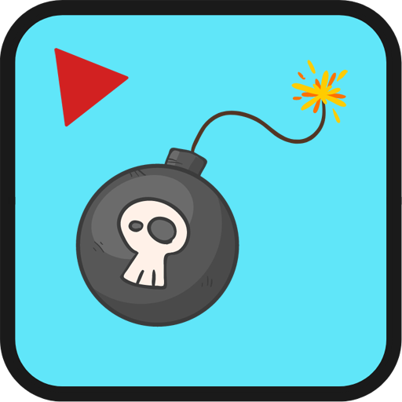
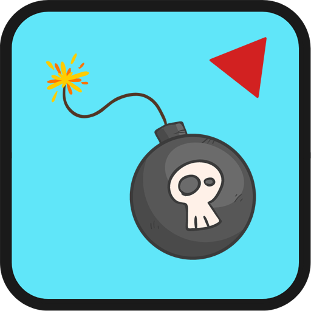
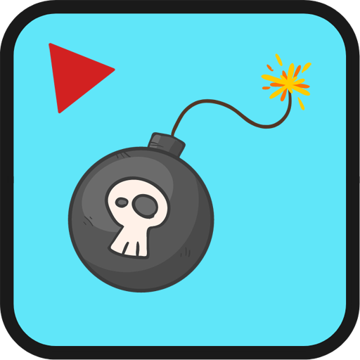
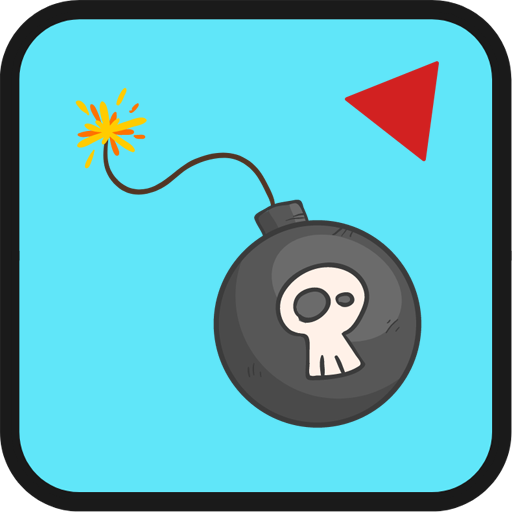

 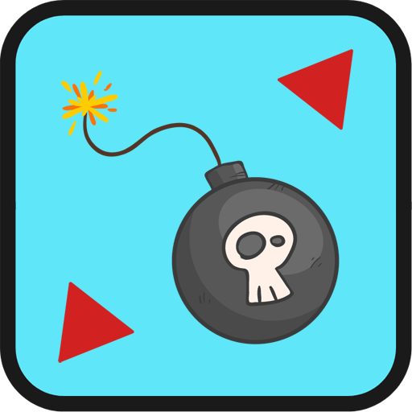
Yön bombaları yanlarında bulunan yön işaretleri ile patladığında hangi yöne doğru çapraz olan karelere patlayacağını gösterir. Bu bombalar patlatıldığında üzerinde gösterilen yönde bulunan kareleri bu bombayı patlatan kişinin zarına dönüştürür. Bu patlama boşluklardan geçer ama duvardan geçemez.
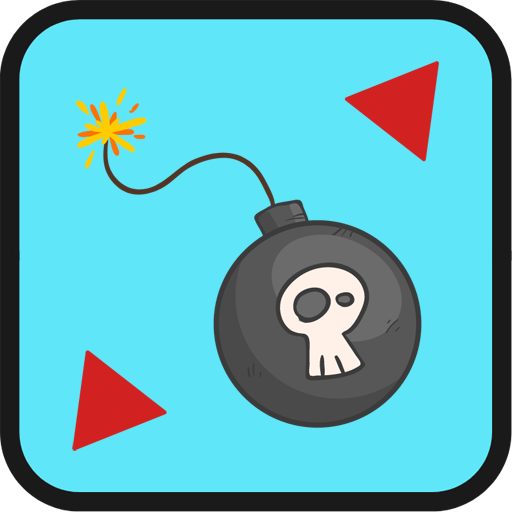
Yön bombaları yanlarında bulunan yön işaretleri ile patladığında hangi yöne doğru çapraz olan karelere patlayacağını gösterir. Bu bombalar patlatıldığında üzerinde gösterilen yönde bulunan kareleri bu bombayı patlatan kişinin zarına dönüştürür. Bu patlama boşluklardan geçer ama duvardan geçemez.
Işınlanma
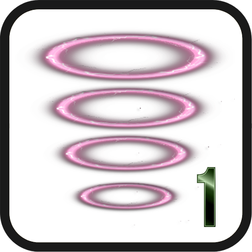

 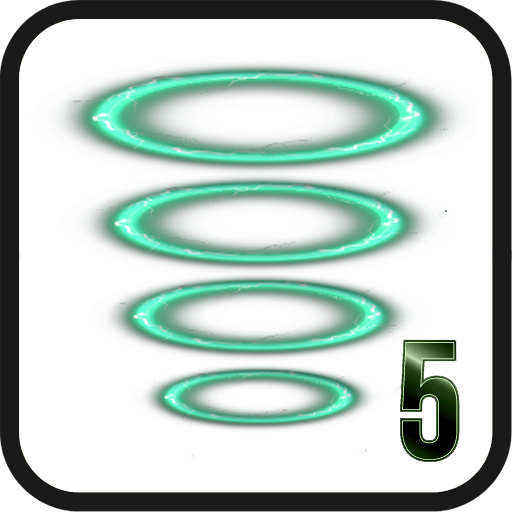
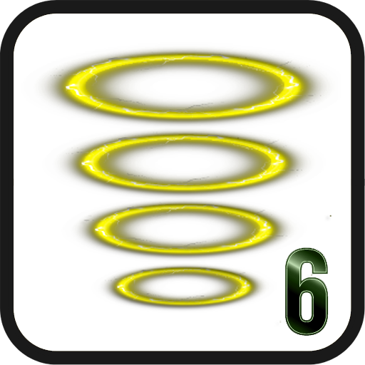
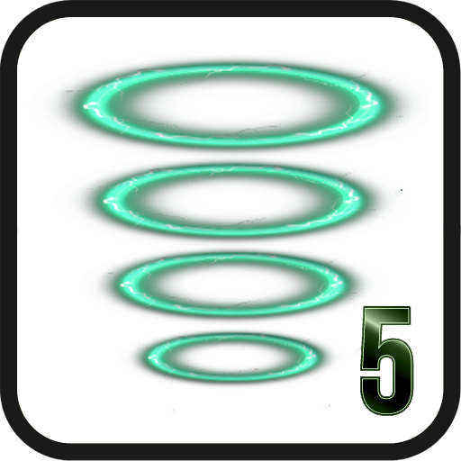
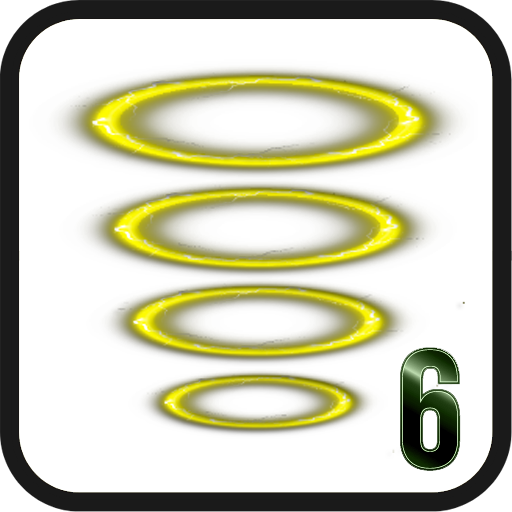
Haritaların bazı noktalarında ışınlanma noktaları bulunmaktadır. Bunlar renk kodlu olarak ikili eş halinde haritada bulunur. Bu ışınlanma noktalarına geldiğinizde zarınız haritadaki temas ettiğiniz renkte olan ışın noktasının eşine gidebilmekte ve değişik stratejiler kullanmanıza olanak sağlamaktadır.
Duvar
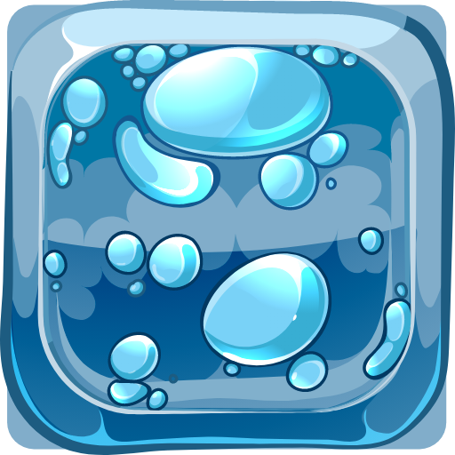 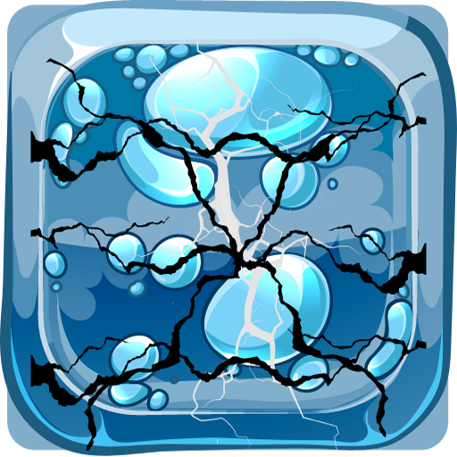
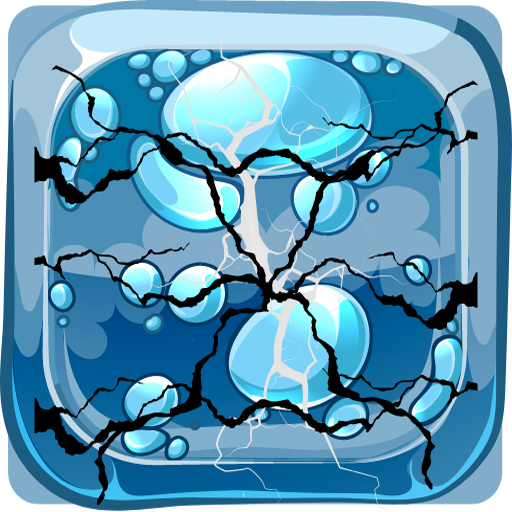
Duvarlar haritaların bazı yerlerinde bulunmaktadır ve bu duvarları geçebilmeniz için zarınızı belli bir miktarda bu duvarların yanında patlatarak duvarları yıkmanız gerekmektedir. Duvarı bütünüyle kırmak için 3 hamle yapmanız gerekmektedir. Her bir darbede duvar çatlayacak; en sonunda kırılacaktır. Rakibinizin size karşı olduğunu unutmayın! Siz duvarla ilgilenirken rakibiniz size karşı büyük üstünlük elde edebilir.
Mayınlar

Mayınlar, bombaların aksine size ve rakibinize avantaj sağlamak için değil, oyundaki heyecanınızı ve adrenalin seviyenizi yüksek tutmak için tasarlanmıştır. Harita içindeki mayın bombalarını patlattığınız takdirde bu bombalar alan kazandırmaz, kazandığınız alanları kaybetmenize yol açar. Mayın bombaları patlatıldığında etrafındaki bir sıra kareyi sahipsiz kareye çevirir.